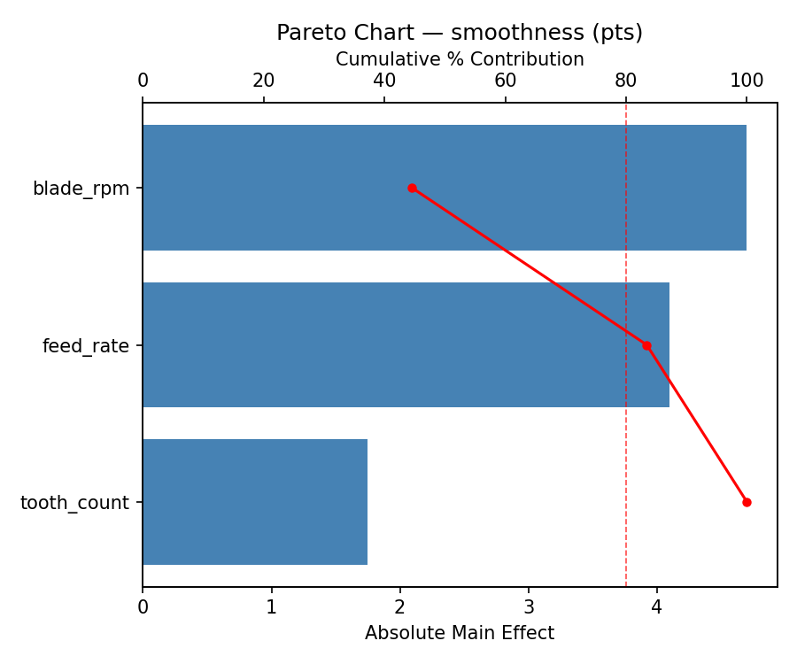
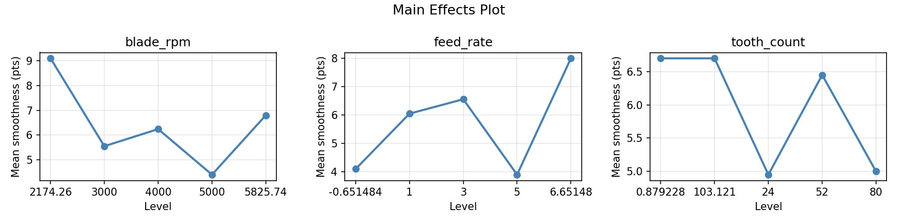
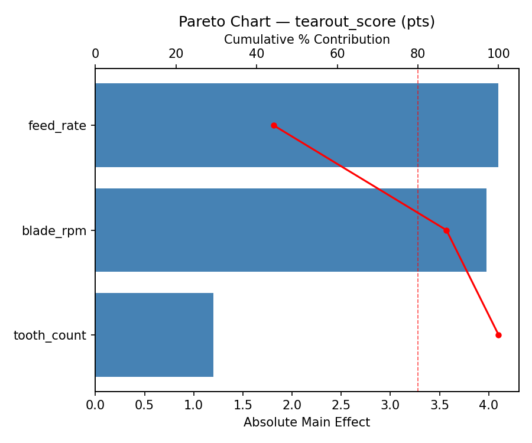
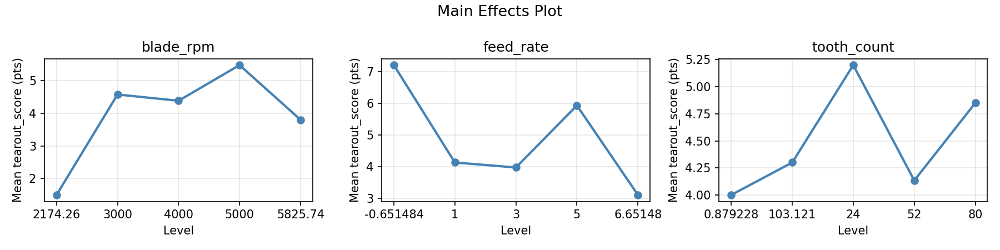
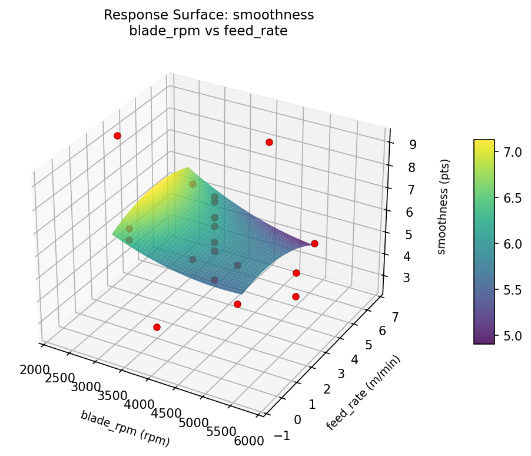
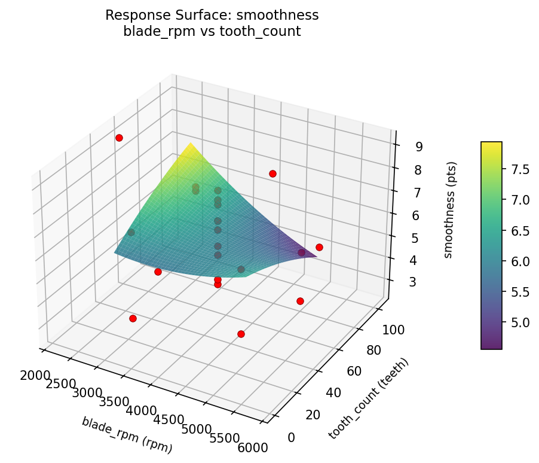
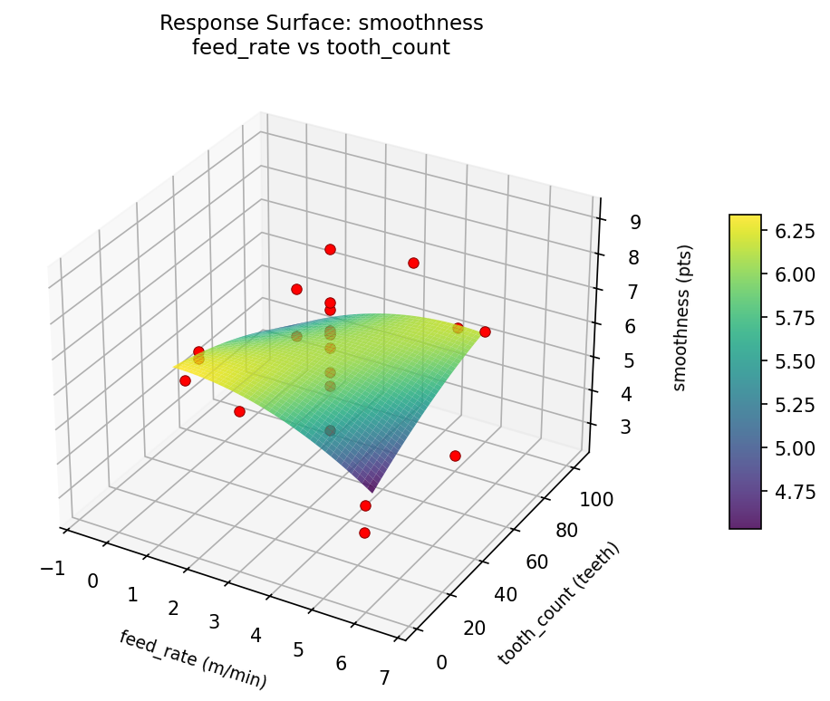
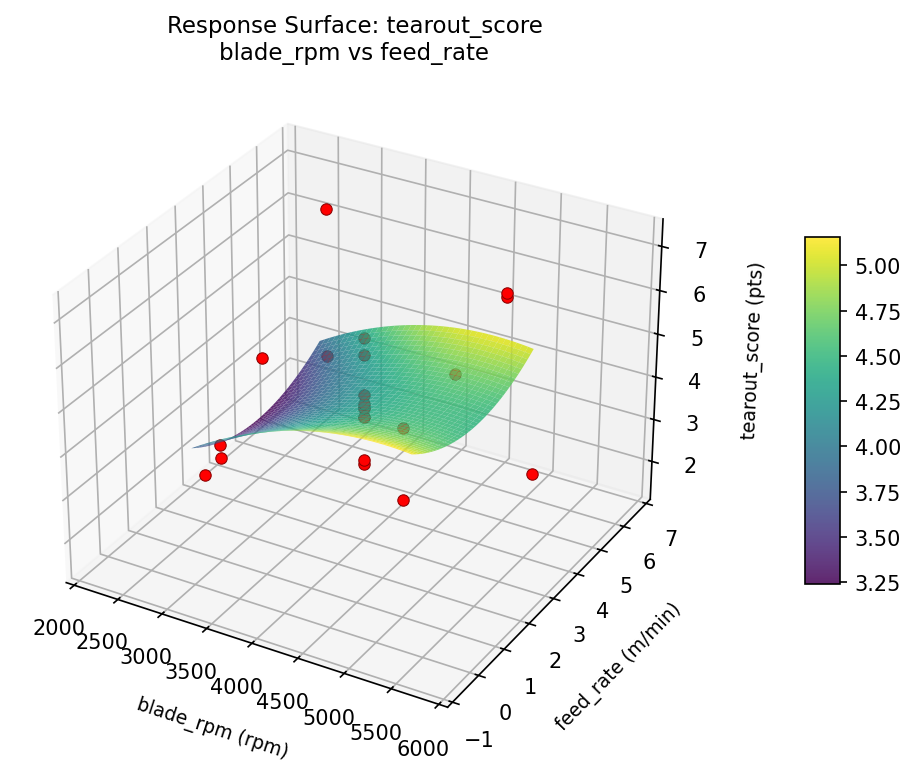
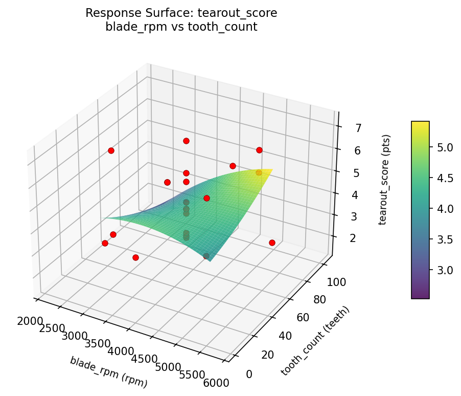
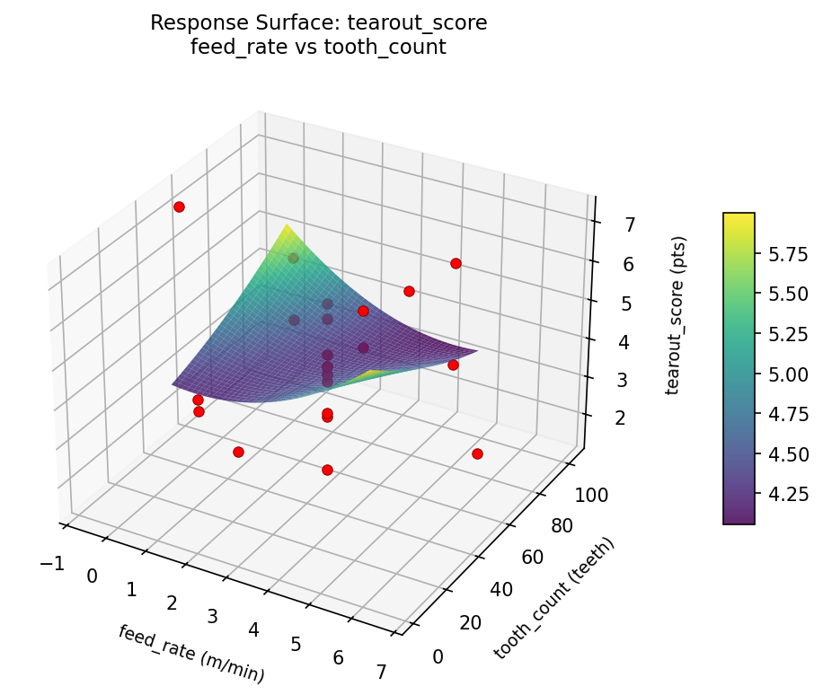

Experimental Setup
Factors
| Factor | Low | High | Unit |
|---|
blade_rpm | 3000 | 5000 | rpm |
feed_rate | 1 | 5 | m/min |
tooth_count | 24 | 80 | teeth |
Fixed: blade_diam = 10in, material = maple
Responses
| Response | Direction | Unit |
|---|
smoothness | ↑ maximize | pts |
tearout_score | ↓ minimize | pts |
Configuration
{
"metadata": {
"name": "Table Saw Cut Quality",
"description": "Central composite design to maximize cut smoothness and minimize tearout by tuning blade speed, feed rate, and blade tooth count"
},
"factors": [
{
"name": "blade_rpm",
"levels": [
"3000",
"5000"
],
"type": "continuous",
"unit": "rpm"
},
{
"name": "feed_rate",
"levels": [
"1",
"5"
],
"type": "continuous",
"unit": "m/min"
},
{
"name": "tooth_count",
"levels": [
"24",
"80"
],
"type": "continuous",
"unit": "teeth"
}
],
"fixed_factors": {
"blade_diam": "10in",
"material": "maple"
},
"responses": [
{
"name": "smoothness",
"optimize": "maximize",
"unit": "pts"
},
{
"name": "tearout_score",
"optimize": "minimize",
"unit": "pts"
}
],
"settings": {
"operation": "central_composite",
"test_script": "use_cases/200_table_saw_cut/sim.sh"
}
}
Experimental Matrix
The Central Composite Design produces 22 runs. Each row is one experiment with specific factor settings.
| Run | blade_rpm | feed_rate | tooth_count |
|---|
| 1 | 4000 | 3 | 52 |
| 2 | 5000 | 1 | 80 |
| 3 | 3000 | 5 | 24 |
| 4 | 4000 | 6.65148 | 52 |
| 5 | 4000 | 3 | 52 |
| 6 | 2174.26 | 3 | 52 |
| 7 | 4000 | 3 | 0.879228 |
| 8 | 4000 | 3 | 52 |
| 9 | 5000 | 5 | 24 |
| 10 | 5825.74 | 3 | 52 |
| 11 | 4000 | 3 | 52 |
| 12 | 4000 | -0.651484 | 52 |
| 13 | 4000 | 3 | 52 |
| 14 | 3000 | 1 | 80 |
| 15 | 4000 | 3 | 52 |
| 16 | 5000 | 1 | 24 |
| 17 | 4000 | 3 | 103.121 |
| 18 | 5000 | 5 | 80 |
| 19 | 4000 | 3 | 52 |
| 20 | 3000 | 1 | 24 |
| 21 | 3000 | 5 | 80 |
| 22 | 4000 | 3 | 52 |
Step-by-Step Workflow
1
Preview the design
$ python doe.py info --config use_cases/200_table_saw_cut/config.json
2
Generate the runner script
$ python doe.py generate --config use_cases/200_table_saw_cut/config.json \
--output use_cases/200_table_saw_cut/results/run.sh --seed 42
3
Execute the experiments
$ bash use_cases/200_table_saw_cut/results/run.sh
4
Analyze results
$ python doe.py analyze --config use_cases/200_table_saw_cut/config.json
5
Get optimization recommendations
$ python doe.py optimize --config use_cases/200_table_saw_cut/config.json
6
Generate the HTML report
$ python doe.py report --config use_cases/200_table_saw_cut/config.json \
--output use_cases/200_table_saw_cut/results/report.html
Features Exercised
| Feature | Value |
|---|
| Design type | central_composite |
| Factor types | continuous (all 3) |
| Arg style | double-dash |
| Responses | 2 (smoothness ↑, tearout_score ↓) |
| Total runs | 22 |
Analysis Results
Generated from actual experiment runs using the DOE Helper Tool.
Response: smoothness
Top factors: blade_rpm (44.5%), feed_rate (38.9%), tooth_count (16.6%).
Pareto Chart

Main Effects Plot

Response: tearout_score
Top factors: feed_rate (44.2%), blade_rpm (42.9%), tooth_count (12.9%).
Pareto Chart

Main Effects Plot

Response Surface Plots
3D surfaces fitted with quadratic RSM. Red dots are observed data points.
smoothness blade rpm vs feed rate

smoothness blade rpm vs tooth count

smoothness feed rate vs tooth count

tearout score blade rpm vs feed rate

tearout score blade rpm vs tooth count

tearout score feed rate vs tooth count

Full Analysis Output
RSM surface: rsm_smoothness_blade_rpm_vs_feed_rate.png
RSM surface: rsm_smoothness_blade_rpm_vs_tooth_count.png
RSM surface: rsm_smoothness_feed_rate_vs_tooth_count.png
RSM surface: rsm_tearout_score_blade_rpm_vs_feed_rate.png
RSM surface: rsm_tearout_score_blade_rpm_vs_tooth_count.png
RSM surface: rsm_tearout_score_feed_rate_vs_tooth_count.png
=== Main Effects: smoothness ===
Factor Effect Std Error % Contribution
--------------------------------------------------------------
blade_rpm 4.7000 0.3555 44.5%
feed_rate 4.1000 0.3555 38.9%
tooth_count 1.7500 0.3555 16.6%
=== Summary Statistics: smoothness ===
blade_rpm:
Level N Mean Std Min Max
------------------------------------------------------------
2174.26 1 9.1000 0.0000 9.1000 9.1000
3000 4 5.5500 1.7786 2.9000 6.7000
4000 12 6.2417 1.3035 3.9000 8.0000
5000 4 4.4000 1.6633 2.6000 6.5000
5825.74 1 6.8000 0.0000 6.8000 6.8000
feed_rate:
Level N Mean Std Min Max
------------------------------------------------------------
-0.651484 1 4.1000 0.0000 4.1000 4.1000
1 4 6.0500 0.8583 4.8000 6.7000
3 12 6.5583 1.2894 3.9000 9.1000
5 4 3.9000 1.7301 2.6000 6.4000
6.65148 1 8.0000 0.0000 8.0000 8.0000
tooth_count:
Level N Mean Std Min Max
------------------------------------------------------------
0.879228 1 6.7000 0.0000 6.7000 6.7000
103.121 1 6.7000 0.0000 6.7000 6.7000
24 4 4.9500 1.9348 2.9000 6.7000
52 12 6.4500 1.5442 3.9000 9.1000
80 4 5.0000 1.7512 2.6000 6.4000
=== Main Effects: tearout_score ===
Factor Effect Std Error % Contribution
--------------------------------------------------------------
feed_rate 4.1000 0.3091 44.2%
blade_rpm 3.9750 0.3091 42.9%
tooth_count 1.2000 0.3091 12.9%
=== Summary Statistics: tearout_score ===
blade_rpm:
Level N Mean Std Min Max
------------------------------------------------------------
2174.26 1 1.5000 0.0000 1.5000 1.5000
3000 4 4.5750 1.7557 3.5000 7.2000
4000 12 4.3833 1.2474 2.9000 7.2000
5000 4 5.4750 1.2038 3.8000 6.4000
5825.74 1 3.8000 0.0000 3.8000 3.8000
feed_rate:
Level N Mean Std Min Max
------------------------------------------------------------
-0.651484 1 7.2000 0.0000 7.2000 7.2000
1 4 4.1250 0.8617 3.5000 5.4000
3 12 3.9667 1.1324 1.5000 5.8000
5 4 5.9250 1.4728 3.8000 7.2000
6.65148 1 3.1000 0.0000 3.1000 3.1000
tooth_count:
Level N Mean Std Min Max
------------------------------------------------------------
0.879228 1 4.0000 0.0000 4.0000 4.0000
103.121 1 4.3000 0.0000 4.3000 4.3000
24 4 5.2000 1.8312 3.5000 7.2000
52 12 4.1333 1.5035 1.5000 7.2000
80 4 4.8500 1.2793 3.8000 6.4000
Pareto chart (smoothness): use_cases/200_table_saw_cut/results/analysis/pareto_smoothness.png
Pareto chart (tearout_score): use_cases/200_table_saw_cut/results/analysis/pareto_tearout_score.png
Main effects (smoothness): use_cases/200_table_saw_cut/results/analysis/main_effects_smoothness.png
Main effects (tearout_score): use_cases/200_table_saw_cut/results/analysis/main_effects_tearout_score.png
Optimization Recommendations
=== Optimization: smoothness ===
Direction: maximize
Best observed run: #2
blade_rpm = 4000
feed_rate = 6.65148
tooth_count = 52
Value: 9.1
RSM Model (linear, R² = 0.0392, Adj R² = -0.1210):
Coefficients:
intercept +5.9364
blade_rpm +0.0910
feed_rate +0.1503
tooth_count -0.3536
RSM Model (quadratic, R² = 0.5435, Adj R² = 0.2011):
Coefficients:
intercept +5.9877
blade_rpm +0.0910
feed_rate +0.1503
tooth_count -0.3536
blade_rpm*feed_rate -0.7625
blade_rpm*tooth_count +0.0375
feed_rate*tooth_count +1.2125
blade_rpm^2 +0.0043
feed_rate^2 +0.4993
tooth_count^2 -0.5807
Curvature analysis:
tooth_count coef=-0.5807 concave (has a maximum)
feed_rate coef=+0.4993 convex (has a minimum)
blade_rpm coef=+0.0043 negligible curvature
Notable interactions:
feed_rate*tooth_count coef=+1.2125 (synergistic)
blade_rpm*feed_rate coef=-0.7625 (antagonistic)
Predicted optimum (from quadratic model):
blade_rpm = 5000
feed_rate = 1
tooth_count = 24
Predicted value: 8.1425
Model quality: Moderate fit — use predictions directionally, not precisely.
Factor importance:
1. tooth_count (effect: 4.1, contribution: 43.6%)
2. feed_rate (effect: 3.8, contribution: 40.4%)
3. blade_rpm (effect: 1.5, contribution: 16.0%)
=== Optimization: tearout_score ===
Direction: minimize
Best observed run: #2
blade_rpm = 4000
feed_rate = 6.65148
tooth_count = 52
Value: 1.5
RSM Model (linear, R² = 0.0649, Adj R² = -0.0909):
Coefficients:
intercept +4.4591
blade_rpm -0.0311
feed_rate -0.3666
tooth_count +0.2451
RSM Model (quadratic, R² = 0.3930, Adj R² = -0.0622):
Coefficients:
intercept +4.6472
blade_rpm -0.0311
feed_rate -0.3666
tooth_count +0.2451
blade_rpm*feed_rate +0.4125
blade_rpm*tooth_count -0.2625
feed_rate*tooth_count -0.9875
blade_rpm^2 -0.2191
feed_rate^2 -0.3241
tooth_count^2 +0.2609
Curvature analysis:
feed_rate coef=-0.3241 concave (has a maximum)
tooth_count coef=+0.2609 convex (has a minimum)
blade_rpm coef=-0.2191 concave (has a maximum)
Notable interactions:
feed_rate*tooth_count coef=-0.9875 (antagonistic)
blade_rpm*feed_rate coef=+0.4125 (synergistic)
Predicted optimum (from quadratic model):
blade_rpm = 3000
feed_rate = 1
tooth_count = 80
Predicted value: 6.6704
Model quality: Weak fit — consider adding center points or using a different design.
Factor importance:
1. feed_rate (effect: 3.3, contribution: 39.6%)
2. tooth_count (effect: 2.9, contribution: 34.3%)
3. blade_rpm (effect: 2.2, contribution: 26.0%)